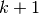
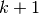
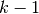

Stacked Denoising Autoencoders (SdA)¶
Note
This section assumes the reader has already read through Classifying MNIST digits using Logistic Regression and Multilayer Perceptron. Additionally it uses the following Theano functions and concepts : T.tanh, shared variables, basic arithmetic ops, T.grad, Random numbers, floatX. If you intend to run the code on GPU also read GPU.
Note
The code for this section is available for download here.
The Stacked Denoising Autoencoder (SdA) is an extension of the stacked autoencoder [Bengio07] and it was introduced in [Vincent08].
This tutorial builds on the previous tutorial Denoising Autoencoders and we recommend, especially if you do not have experience with autoencoders, to read it before going any further.
Stacked Autoencoders¶
The denoising autoencoders can be stacked to form a deep network by
feeding the latent representation (output code)
of the denoising auto-encoder found on the layer
below as input to the current layer. The unsupervised pre-training of such an
architecture is done one layer at a time. Each layer is trained as
a denoising auto-encoder by minimizing the reconstruction of its input
(which is the output code of the previous layer).
Once the first  layers
are trained, we can train the -th layer because we can now
compute the code or latent representation from the layer below.
Once all layers are pre-trained, the network goes through a second stage
of training called fine-tuning. Here we consider supervised fine-tuning
where we want to minimize prediction error on a supervised task.
For this we first add a logistic regression
layer on top of the network (more precisely on the output code of the
output layer). We then
train the entire network as we would train a multilayer
perceptron. At this point, we only consider the encoding parts of
each auto-encoder.
This stage is supervised, since now we use the target class during
training (see the Multilayer Perceptron for details on the multilayer perceptron).
layers
are trained, we can train the -th layer because we can now
compute the code or latent representation from the layer below.
Once all layers are pre-trained, the network goes through a second stage
of training called fine-tuning. Here we consider supervised fine-tuning
where we want to minimize prediction error on a supervised task.
For this we first add a logistic regression
layer on top of the network (more precisely on the output code of the
output layer). We then
train the entire network as we would train a multilayer
perceptron. At this point, we only consider the encoding parts of
each auto-encoder.
This stage is supervised, since now we use the target class during
training (see the Multilayer Perceptron for details on the multilayer perceptron).
This can be easily implemented in Theano, using the class defined before for a denoising autoencoder. We can see the stacked denoising autoencoder as having two facades, one is a list of autoencoders, the other is an MLP. During pre-training we use the first facade, i.e we treat our model as a list of autoencoders, and train each autoencoder seperately. In the second stage of training, we use the second facade. These two facedes are linked by the fact that the autoencoders and the sigmoid layers of the MLP share parameters, and the fact that autoencoders get as input latent representations of intermediate layers of the MLP.
class SdA(object):
def __init__(self, numpy_rng, theano_rng = None, n_ins = 784,
hidden_layers_sizes = [500,500], n_outs = 10,
corruption_levels = [0.1, 0.1]):
""" This class is made to support a variable number of layers.
:type numpy_rng: numpy.random.RandomState
:param numpy_rng: numpy random number generator used to draw initial
weights
:type theano_rng: theano.tensor.shared_randomstreams.RandomStreams
:param theano_rng: Theano random generator; if None is given one is
generated based on a seed drawn from `rng`
:type n_ins: int
:param n_ins: dimension of the input to the sdA
:type n_layers_sizes: list of ints
:param n_layers_sizes: intermediate layers size, must contain
at least one value
:type n_outs: int
:param n_outs: dimension of the output of the network
:type corruption_levels: list of float
:param corruption_levels: amount of corruption to use for each
layer
"""
self.sigmoid_layers = []
self.dA_layers = []
self.params = []
self.n_layers = len(hidden_layers_sizes)
assert self.n_layers > 0
if not theano_rng:
theano_rng = RandomStreams(numpy_rng.randint(2**30))
# allocate symbolic variables for the data
self.x = T.matrix('x') # the data is presented as rasterized images
self.y = T.ivector('y') # the labels are presented as 1D vector of
# [int] labels
self.sigmoid_layers will store the sigmoid layers of the MLP facade, while self.dA_layers will store the denoising autoencoder associated with the layers of the MLP.
Next step, we construct n_layers sigmoid layers (we use the
SigmoidalLayer class introduced in Multilayer Perceptron, with the only
modification that we replaced the non-linearity from tanh to the
logistic function  ) and n_layers
denoising autoencoders, where n_layers is the depth of our model.
We link the sigmoid layers such that they form an MLP, and construct
each denoising autoencoder such that they share the weight matrix and the
bias of the encoding part with its corresponding sigmoid layer.
) and n_layers
denoising autoencoders, where n_layers is the depth of our model.
We link the sigmoid layers such that they form an MLP, and construct
each denoising autoencoder such that they share the weight matrix and the
bias of the encoding part with its corresponding sigmoid layer.
for i in xrange( self.n_layers ):
# construct the sigmoidal layer
# the size of the input is either the number of hidden units of
# the layer below or the input size if we are on the first layer
if i == 0 :
input_size = n_ins
else:
input_size = hidden_layers_sizes[i-1]
# the input to this layer is either the activation of the hidden
# layer below or the input of the SdA if you are on the first
# layer
if i == 0 :
layer_input = self.x
else:
layer_input = self.sigmoid_layers[-1].output
sigmoid_layer = SigmoidalLayer(rng = rng,
input = layer_input,
n_in = input_size,
n_out = hidden_layers_sizes[i] )
# add the layer to our list of layers
self.sigmoid_layers.append(sigmoid_layer)
# its arguably a philosophical question...
# but we are going to only declare that the parameters of the
# sigmoid_layers are parameters of the StackedDAA
# the visible biases in the dA are parameters of those
# dA, but not the SdA
self.params.extend(sigmoid_layer.params)
# Construct a denoising autoencoder that shared weights with this
# layer
dA_layer = dA(rng = rng, trng = trng, input = layer_input,
n_visible = input_size,
n_hidden = hidden_layers_sizes[i],
corruption_level = corruption_levels[0],
W = sigmoid_layer.W, bhid = sigmoid_layer.b)
self.dA_layers.append(dA_layer)
All we need now is to add the logistic layer on top of the sigmoid layers such that we have an MLP. We will use the LogisticRegression class introduced in Classifying MNIST digits using Logistic Regression.
# We now need to add a logistic layer on top of the MLP
self.logLayer = LogisticRegression(\
input = self.sigmoid_layers[-1].output,\
n_in = hidden_layers_sizes[-1], n_out = n_outs)
self.params.extend(self.logLayer.params)
# construct a function that implements one step of finetunining
# compute the cost for second phase of training,
# defined as the negative log likelihood
self.finetune_cost = self.logLayer.negative_log_likelihood(self.y)
# compute the gradients with respect to the model parameters
# symbolic variable that points to the number of errors made on the
# minibatch given by self.x and self.y
self.errors = self.logLayer.errors(self.y)
The class also provides a method that generates training functions for
each of the denoising autoencoder associated with the different layers.
They are returned as a list, where element  is a function that
implements one step of training the dA correspoinding to layer
.
is a function that
implements one step of training the dA correspoinding to layer
.
def pretraining_functions(self, train_set_x, batch_size):
''' Generates a list of functions, each of them implementing one
step in trainnig the dA corresponding to the layer with same index.
The function will require as input the minibatch index, and to train
a dA you just need to iterate, calling the corresponding function on
all minibatch indexes.
:type train_set_x: theano.tensor.TensorType
:param train_set_x: Shared variable that contains all datapoints used
for training the dA
:type batch_size: int
:param batch_size: size of a [mini]batch
:type learning_rate: float
:param learning_rate: learning rate used during training for any of
the dA layers
'''
# index to a [mini]batch
index = T.lscalar('index') # index to a minibatch
In order to be able to change the corruption level or the learning rate during training we associate a Theano variable to them.
corruption_level = T.scalar('corruption') # amount of corruption to use
learning_rate = T.scalar('lr') # learning rate to use
# number of batches
n_batches = train_set_x.get_value(borrow=True).shape[0] / batch_size
# begining of a batch, given `index`
batch_begin = index * batch_size
# ending of a batch given `index`
batch_end = batch_begin+batch_size
pretrain_fns = []
for dA in self.dA_layers:
# get the cost and the updates list
cost,updates = dA.get_cost_updates( corruption_level, learning_rate)
# compile the theano function
fn = theano.function( inputs = [index,
theano.Param(corruption_level, default = 0.2),
theano.Param(learning_rate, default = 0.1)],
outputs = cost,
updates = updates,
givens = {self.x :train_set_x[batch_begin:batch_end]})
# append `fn` to the list of functions
pretrain_fns.append(fn)
return pretrain_fns
Now any function pretrain_fns[i] takes as arguments index and optionally corruption – the corruption level or lr – the learning rate. Note that the name of the parameters are the name given to the Theano variables when they are constructed, not the name of the python variables (learning_rate or corruption_level). Keep this in mind when working with Theano.
In the same fashion we build a method for constructing function required during finetuning ( a train_model, a validate_model and a test_model funcion).
def build_finetune_functions(self, datasets, batch_size, learning_rate):
'''Generates a function `train` that implements one step of
finetuning, a function `validate` that computes the error on
a batch from the validation set, and a function `test` that
computes the error on a batch from the testing set
:type datasets: list of pairs of theano.tensor.TensorType
:param datasets: It is a list that contain all the datasets;
the has to contain three pairs, `train`,
`valid`, `test` in this order, where each pair
is formed of two Theano variables, one for the
datapoints, the other for the labels
:type batch_size: int
:param batch_size: size of a minibatch
:type learning_rate: float
:param learning_rate: learning rate used during finetune stage
'''
(train_set_x, train_set_y) = datasets[0]
(valid_set_x, valid_set_y) = datasets[1]
(test_set_x , test_set_y ) = datasets[2]
# compute number of minibatches for training, validation and testing
n_valid_batches = valid_set_x.get_value(borrow=True).shape[0] / batch_size
n_test_batches = test_set_x.get_value(borrow=True).shape[0] / batch_size
index = T.lscalar('index') # index to a [mini]batch
# compute the gradients with respect to the model parameters
gparams = T.grad(self.finetune_cost, self.params)
# compute list of fine-tuning updates
updates = {}
for param, gparam in zip(self.params, gparams):
updates[param] = param - gparam*learning_rate
train_fn = theano.function(inputs = [index],
outputs = self.finetune_cost,
updates = updates,
givens = {
self.x : train_set_x[index*batch_size:(index+1)*batch_size],
self.y : train_set_y[index*batch_size:(index+1)*batch_size]})
test_score_i = theano.function([index], self.errors,
givens = {
self.x: test_set_x[index*batch_size:(index+1)*batch_size],
self.y: test_set_y[index*batch_size:(index+1)*batch_size]})
valid_score_i = theano.function([index], self.errors,
givens = {
self.x: valid_set_x[index*batch_size:(index+1)*batch_size],
self.y: valid_set_y[index*batch_size:(index+1)*batch_size]})
# Create a function that scans the entire validation set
def valid_score():
return [valid_score_i(i) for i in xrange(n_valid_batches)]
# Create a function that scans the entire test set
def test_score():
return [test_score_i(i) for i in xrange(n_test_batches)]
return train_fn, valid_score, test_score
Note that the returned valid_score and test_score are not Theano functions, but rather python functions that also loop over the entire validation set and the entire test set producing a list of the losses over these sets.
Putting it all together¶
The few lines of code below constructs the stacked denoising autoencoder :
numpy_rng = numpy.random.RandomState(123)
print '... building the model'
# construct the stacked denoising autoencoder class
sda = SdA( numpy_rng = numpy_rng, n_ins = 28*28,
hidden_layers_sizes = [100,100,100],
n_outs = 10)
There are two stages in training this network, a layer-wise pre-training and fine-tuning afterwards.
For the pre-training stage, we will loop over all the layers of the network. For each layer we will use the compiled theano function that implements a SGD step towards optimizing the weights for reducing the reconstruction cost of that layer. This function will be applied to the training set for a fixed number of epochs given by pretraining_epochs.
#########################
# PRETRAINING THE MODEL #
#########################
print '... getting the pretraining functions'
pretraining_fns = sda.pretraining_functions(
train_set_x = train_set_x,
batch_size = batch_size )
print '... pre-training the model'
start_time = time.clock()
## Pre-train layer-wise
for i in xrange(sda.n_layers):
# go through pretraining epochs
for epoch in xrange(pretraining_epochs):
# go through the training set
c = []
for batch_index in xrange(n_train_batches):
c.append( pretraining_fns[i](index = batch_index,
corruption = 0.2, lr = pretrain_lr ) )
print 'Pre-training layer %i, epoch %d, cost '%(i,epoch),numpy.mean(c)
end_time = time.clock()
print ('Pretraining took %f minutes' %((end_time-start_time)/60.))
The fine-tuning loop is very similar with the one in the Multilayer Perceptron, the
only difference is that we will use now the functions given by
 .
.
Running the Code¶
The user can run the code by calling:
python code/SdA.py
By default the code runs 15 pre-training epochs for each layer, with a batch size of 1. The corruption level for the first layer is 0.1, for the second 0.2 and 0.3 for the third. The pretraining learning rate is was 0.001 and the finetuning learning rate is 0.1. Pre-training takes 585.01 minutes, with an average of 13 minutes per epoch. Fine-tuning is completed after 36 epochs in 444.2 minutes, with an average of 12.34 minutes per epoch. The final validation score is 1.39% with a testing score of 1.3%. These results were obtained on a machine with an Intel Xeon E5430 @ 2.66GHz CPU, with a single-threaded GotoBLAS.
Tips and Tricks¶
One way to improve the running time of your code (given that you have sufficient memory available), is to compute how the network, up to layer , transforms your data. Namely, you start by training your first layer dA. Once it is trained, you can compute the hidden units values for every datapoint in your dataset and store this as a new dataset that you will use to train the dA corresponding to layer 2. Once you trained the dA for layer 2, you compute, in a similar fashion, the dataset for layer 3 and so on. You can see now, that at this point, the dAs are trained individually, and they just provide (one to the other) a non-linear transformation of the input. Once all dAs are trained, you can start fine-tunning the model.